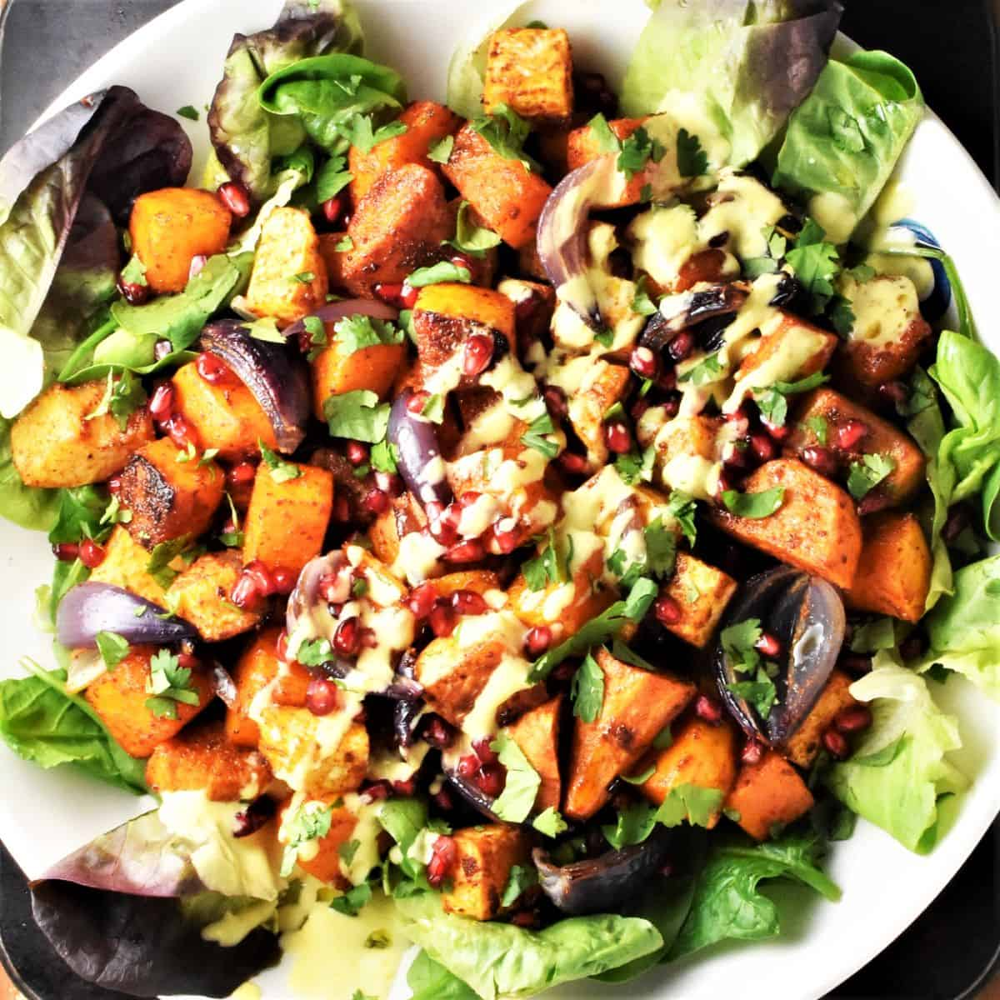

Warm Roasted Salad
Home

Easy Warm Roasted Salade
This versatile recipe is easy to whip up. It is easy to follow, and filled with yummy seasonal vegetables.
Dressing
- 4 tablespoons olive oil
- 2 tablespoons lemon
- 3 tablespoons dijon mustard
The salad
- Brown or white rice
- 1/2 a pumpkin, peeled and diced
- 2 sweet potatoes, peeled and diced
- 2 heads of broccoli, cut into chunks
- Handful of cashes
- Handful of pepita seeds
- Handful of cranberries or sultanas
Method
- Coat the broccoli, pumpkin and sweet potato in olive oil and place on baking trays, separating the broccoli from the others. Roast in the oven for 180 degrees until cooked. This takes about 30-40 minutes for the broccoli, and 45-60 minutes for the sweet potato and pumpkin.
- Prepare the dressing by mixing the ingredients together, and put to one side.
- When the roast vegetables are done, mix in a bowl with the cashews, pepita seeds and cranberries or sultanas. Pour the dressing over the lot, and serve!